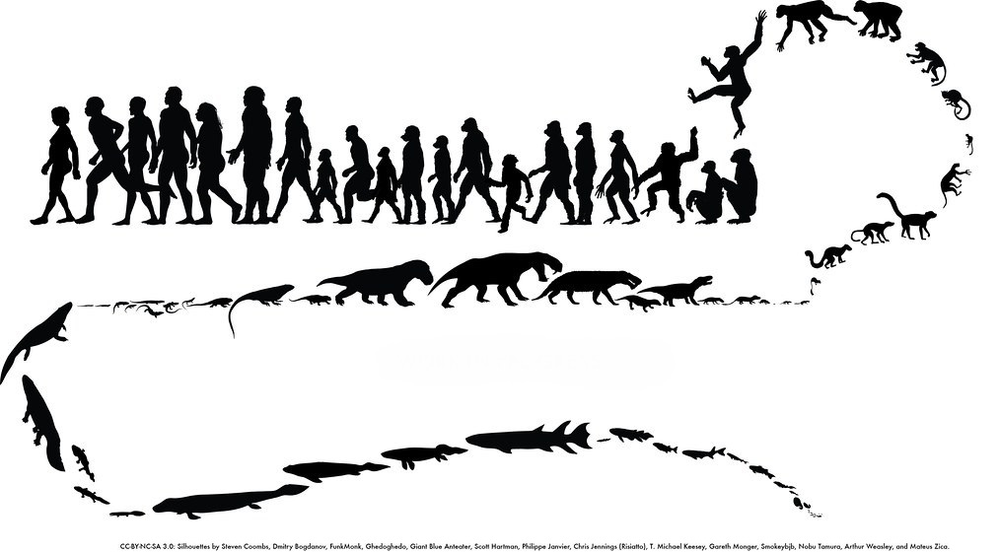
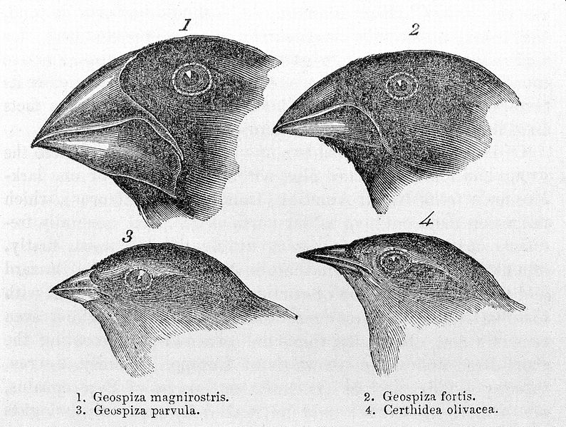
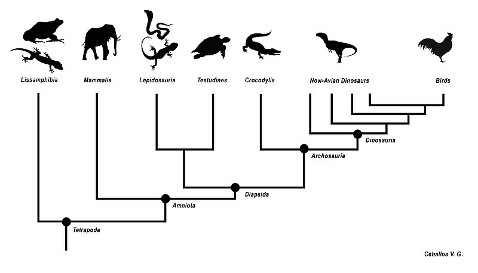

O que é a teoria da evolução?
A teoria da evolução, ou seleção natural, é uma teoria que visa explicar a biodiversidade do planeta. Ela foi proposta pelo britânico Charles Darwin em seu livro "A origem das espécies" em 1859.
Desde então, a teoria passou por inúmeras atualizações, mas sua essência se mantém sólida e é um dos principais pilares da biologia moderna.
Qual é a teoria de Darwin?
Darwin propôs que todos os seres vivos do planeta descendem de um ancestral comum, e que a imensa variedade de espécies existente se deu por meio de um fenômeno chamado seleção natural.
Apesar de ser praxe na biologia, a teoria ainda é bastante mal compreendida pelo público geral. Muitas pessoas vêm a seleção natural com um olhar lamarckista, isto é, acreditam que os animais mudam com o propósito de se adaptar ao ambiente, ou de acordo com o quanto usam ou necessitam de uma característica.
A seleção natural, entretanto, é um processo que acontece quase matematicamente quando certas condições são cumpridas. Ela não depende de forças externas e não têm uma direção determinada. Fica mais fácil compreender esse fenómeno no nosso planeta após ter-se compreendido tais condições, então vamos começar as explicando.
Como acontece a evolução?
A evolução, ou seleção natural, é um fenômeno que decorre naturalmente de três condições:
- A existência de agentes auto-replicantes
- A existência de variabilidade nesse processo de replicação
- Um agente seletor
É muito comum que se diga que a evolução natural acontece "pelo bem da espécie", outros acreditam que ela tem como principal sujeito os indivíduos. A verdade como compreendida hoje é que ela acontece em diversos âmbitos, porém, seu principal sujeito são os genes.
O que são genes?
Genes são moléculas complexas capazes de criar cópias de si mesmas(condição 1). Toda célula viva possui material genético, e toda célula de um indivíduo(exceto pelas gametas) possuem os mesmos genes.
Genes são como um código. Um manual de instrução para a síntese de proteínas e, portanto, servem como "arquitetos" do nosso corpo, ordenando com sinais químicos nossa construção e funcionamento.
O que é mutação?
A mutação é uma falha na replicação do gene. Quando um gene tenta criar uma cópia de si mesmo, mas acaba criando algo diferente, ele cria um "arquiteto" que dá "instruções" diferentes(condição 2). A mutação é o principal motivo pelo qual existem tantos genes diferentes e, portanto, tantas características diferentes entre os seres vivos.
A mutação é um processo totalmente aleatório, isto é, o novo gene não precisa ser benéfico ao seu portador, ele não precisa ser "melhor" que o anterior. A mudança pode ser negativa ou até mesmo totalmente neutra.
Assim, genes e mutações não são o suficiente para explicar a evolução. Aqui entra nosso terceiro fator e a chave para entender o pensamento darwinista:
Por que "seleção natural"?
A teoria recebe esse nome porque Darwin comprovou que o agente seletivo da evolução, ou seja, o agente que decide quais características perduram nas espécies, é o próprio ambiente no qual estas espécies estão inseridas(condição 3). Portanto, não é necessário um agente consciente, tampouco é necessário que haja uma direção nas mudanças, pois elas são selecionadas naturalmente pelas condições em que se encontram.

Para ilustrar o pensamento, imaginemos uma população qualquer de mamíferos que habita uma planície. Dentro dessa população, cada indivíduo tem seu próprio genoma(seus arquitetos) com características particulares que determinam coisas como o tamanho, espessura dos pelos, tendências comportamentais e etc…
A todo tempo, surgem novas características através de mutações ou da recombinação e expressão dos genes existentes. É possível, portanto, que nasça um indivíduo com pêlos mais longos e grossos que todos os outros, ou com pêlos mais finos e curtos. Como então a espécie poderia se adaptar para ter pelos mais longos e grossos caso, por exemplo, migre para um lugar mais frio?
Um ambiente frio não irá imediatamente fazer com que nasçam menos indivíduos com pêlo mais fino, ou que nasçam mais com pêlo mais grosso, porém, os que nascerem por coincidência mais adaptados ao ambiente terão maiores chances de chegar até a idade reprodutiva e passar seus genes à geração seguinte. Assim, essa geração irá tender a ter pêlos mais grossos não porque o ambiente o exige, mas porque na geração anterior, os indivíduos com pêlo grossos tiveram uma vantagem que os permitiu chegar à idade adulta e se reproduzir com mais facilidade.
Agora que entendemos como características surgem e são selecionadas, podemos usar dessa lógica para explicar a biodiversidade no planeta.
O que é especiação?
Especiação é o processo no qual uma espécie se divide para em duas ou mais espécies, ele ocorre sempre que há uma barreira reprodutiva entre indivíduos da mesma espécie, ou seja, quando partes diferentes de uma população não podem trocar seus genes.
Quase sempre essa divisão acontece por conta de um fator geológico.
Seguindo nosso exemplo anterior, sabemos que uma população de mamíferos que migra para uma área mais fria tende a adquirir pelos mais grossos através da geração, da mesma forma, podemos presumir que uma espécie que migre para uma região mais quente possa adquirir pelos mais curtos e finos, que não retém tanto calor.
Se ambas as populações não possuem mais contato direto, é impossível que elas se reproduzam entre si, portanto, é impossível que as características que surgem em uma população sejam transmitidas para a outra. Quando adicionada uma escala de tempo de dezenas, centenas ou milhares de gerações, as duas populações podem acabar com genomas tão diferentes que indivíduos de uma população não serão mais capazes de se reproduzir com os indivíduos da outra. A partir daí, elas podem ser consideradas espécies diferentes.